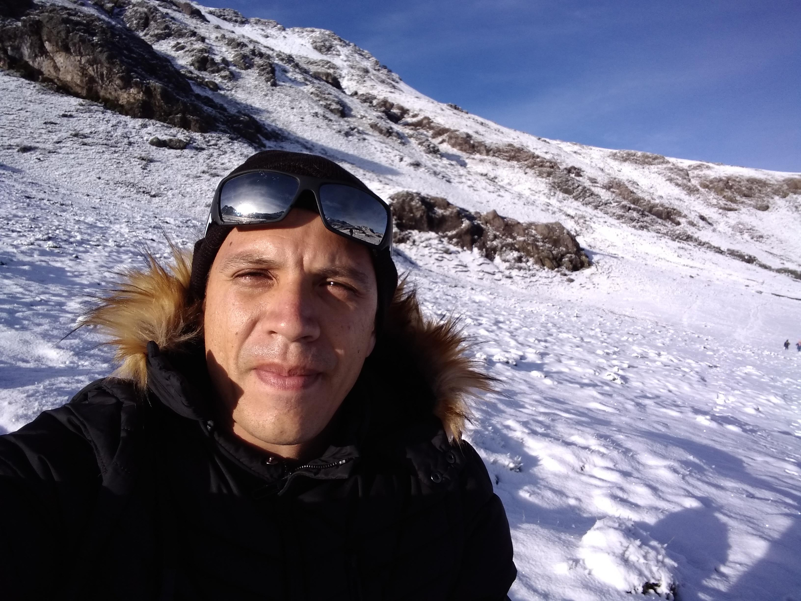

es un país del extremo norte de Sudamérica. Su paisaje cuenta con bosques tropicales, las montañas de los Andes y varias plantaciones de café. En Bogotá, su capital a gran altura, el distrito Zona Rosa es famoso por sus restaurantes y tiendas. Cartagena, en la costa del Caribe, tiene una Ciudad Antigua colonial amurallada, un castillo del siglo XVI y arrecifes de coral cercanos.
es un país que se extiende por el ecuador en la costa oeste de Sudamérica. Sus diversos paisajes abarcan la selva del Amazonas, las zonas altas andinas y las islas Galápagos de abundante fauna. En las laderas de los Andes, a una elevación de 2,850 m, Quito, su capital, es famosa por su centro colonial español que se ha conservado intacto por mucho tiempo, con palacios decorados del siglo XVI y XVII y sitios religiosos, como la ornamentada Iglesia de la Compañía de Jesús
Perú es un país de Sudamérica que abarca una sección del bosque del Amazonas y Machu Picchu, una antigua ciudad inca en las alturas de los Andes. La región en torno a Machu Picchu, incluido el Valle Sagrado, el Camino del Inca y la ciudad colonial de Cuzco, es rica en sitios arqueológicos. En la costa árida del Pacífico de Perú se encuentra Lima, la capital, con un centro colonial preservado e importantes colecciones de arte precolombino
Bolivia es un país del centro de Sudamérica, con un terreno variado desde los Andes, el Desierto de Atacama y el bosque pluvial en la cuenca del Amazonas. A más de 3,500 m de altura, su capital administrativa, La Paz, se ubica en el Altiplano de los Andes con el monte nevado Illimani de fondo. Cerca se encuentra el cristalino lago Titicaca, el más grande del continente, que se extiende por la frontera con Perú
Brasil es un vasto país de Sudamérica que se extiende desde la Cuenca del Amazonas en el norte hasta los viñedos y las enormes cataratas del Iguazú en el sur. Río de Janeiro, simbolizado por su estatua de 38 m del Cristo Redentor sobre el cerro del Corcovado, es famoso por sus ajetreadas playas Copacabana e Ipanema, junto con su enorme y estridente festival del Carnaval, que cuenta con carros alegóricos, exuberantes disfraces y danza y música samba.
Chile es un país largo y angosto que se extiende por el borde occidental de Sudamérica, con más de 6,000 km de costa en el océano Pacífico. Santiago, su capital, se ubica en un valle rodeado de los Andes y la cordillera de la Costa. En la Plaza de Armas de la ciudad, bordeada de palmeras, se encuentra la catedral neoclásica y el Museo de Historia Nacional. El enorme Parque Metropolitano cuenta con piscinas, un jardín botánico y un zoológico
España, país de la península ibérica de Europa, incluye 17 regiones autónomas con diversas características geográficas y culturales. En Madrid, su capital, se encuentra el Palacio Real y el Museo del Prado, que alberga obras de maestros europeos. Segovia tiene un castillo medieval (el Alcázar) y un acueducto romano intacto. La capital de Cataluña, Barcelona, se caracteriza por las obras modernistas extravagantes de Antoni Gaudí, como el templo de la Sagrada Familia.
